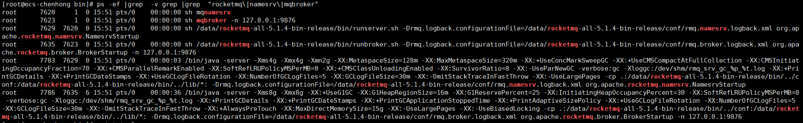
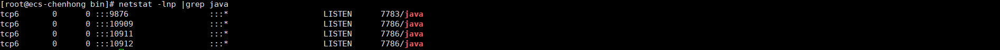

[toc]
RocketMQ
RocketMQ 是一种高性能、高可靠性、分布式消息中间件系统，由阿里巴巴集团开发和维护。它提供了可靠的异步通信和消息驱动能力，使得分布式系统可以进行高效的解耦和扩展。
RocketMQ 可以被用于支持多种场景，包括但不限于以下几个方面：
- 异步消息传递：RocketMQ 提供了高性能的消息传递机制，可以支持异步通信，实现消息的可靠传递，适用于企业级应用和互联网应用场景。
- 顺序消息处理：RocketMQ 能够保证消息的有序性，在特定场景（如订单处理）中非常有用。
- 分布式事务消息：RocketMQ 提供了分布式事务消息的支持，可以在分布式环境下保证消息的原子性，确保消息和业务数据的一致性。
- 高可用性和容错性：RocketMQ 具备高可用性和容错性，可以支持多个节点的冗余备份，以及自动故障转移和负载均衡。
- 流式处理：RocketMQ 可以作为流式处理的基础设施，支持实时数据传输和处理。
作为一款开源的消息中间件，RocketMQ 拥有丰富的社区资源和活跃的开发者社区，广泛应用于各个领域和规模的系统中。
1.部署
1.1 下载
https://rocketmq.apache.org/download/
#具体以现场选择版本为准
wget https://dist.apache.org/repos/dist/release/rocketmq/5.1.4/rocketmq-all-5.1.4-bin-release.zip
1.2 部署
1.2.1 前置依赖
系统要求
64位操作系统，推荐Linux/Unix/macOS
64 位 JDK 1.8+
yum -y install java-1.8.0-openjdk.x86_64 java-1.8.0-openjdk-devel #也可以手工安装oracle jdk #目前测试openjdk，是可以启动的，但是查看集群节点信息提示某个加密方式有问题，所以建议还是oracle jdk
1.2.2 解压&启动
unzip rocketmq-all-5.1.4-bin-release.zip
cd rocketmq-all-5.1.4-bin-release/bin
sh play.sh
1.2.3 检查启动结果
ps -ef |grep -v grep |grep "rocketmq\|namesrv\|mqbroker"
#正常情况下应该有6个进程
netstat -lnp|grep java
#如果在没其他java进程的情况下


2.基本概念
在RocketMQ中，有一些基本的概念需要了解：
- Producer（生产者）：消息的发送方，负责将消息发送到Broker。
- Consumer（消费者）：消息的接收方，负责从Broker订阅并消费消息。
- Topic（主题）：消息的逻辑分类，类似于消息的主题或者标签。Producer将消息发送到指定的主题，Consumer从主题中订阅并消费消息。
- Message（消息）：RocketMQ中的基本数据单元，包含了消息的内容和一些附加属性。
- Broker（消息代理）：RocketMQ的核心组件之一，负责存储和转发消息。Broker接收Producer发送的消息，并将其持久化到磁盘，同时接收Consumer的订阅请求，将消息推送给Consumer。
- NameServer（命名服务器）：RocketMQ的核心组件之一，负责管理Broker的元数据信息。Producer和Consumer通过与NameServer进行通信，获取Broker的地址和路由信息。
- Message Queue（消息队列）：每个主题下可以有多个消息队列，用于并行存储和发送消息。Producer发送的消息会被划分到不同的队列中，Consumer根据自身的并行度从不同的队列订阅和消费消息。
- Tag（标签）：消息的额外属性，可以用于更细粒度地对消息进行过滤和分类。
- Group（消费组）：一组具有相同消费逻辑的Consumer的集合。同一个消费组中的Consumer共同消费一个主题下的消息，并且每条消息只会被消费组中的一个Consumer消费。
以上是RocketMQ的一些基本概念，了解这些概念将有助于您更好地理解和使用RocketMQ。
当使用RocketMQ时，两个重要的组件是Broker和NameServer。这也是RocketMQ服务启动的2个进程，类似HDFS当中的DataNode和NameNode
- Broker（消息代理）：
- Broker是RocketMQ的核心组件之一，负责接收、存储和转发消息。
- 它包含一个或多个Topic，每个Topic可以有多个消息队列。
- Broker接收Producer发送的消息，并将其持久化到磁盘，同时接收Consumer的订阅请求，将消息推送给Consumer。
- Broker还负责处理消息的顺序、消息的拉取和推送等功能。
- Broker可以配置为主备模式，以保证高可用性和容错性。
- Broker集群由多个Broker实例组成，通过配置文件中的
brokerClusterName和brokerName进行唯一标识和区分。
- NameServer（命名服务器）：
- NameServer是RocketMQ的核心组件之一，负责管理Broker的元数据信息。
- 它充当了Broker的路由和发现中心。
- Producer和Consumer通过与NameServer进行通信，获取Broker的地址和路由信息。
- NameServer的主要功能是注册Broker、提供Broker的路由信息和负载均衡。
- NameServer是一个轻量级的组件，可以部署多个实例以实现高可用性。
- NameServer集群由多个NameServer实例组成，通过配置文件中的
namesrvAddr进行唯一标识和区分。
Broker和NameServer是RocketMQ分布式消息系统的核心组件，它们协同工作以确保消息的可靠传输和高可用性。理解它们的工作原理和配置方式非常重要，以便正确配置和管理RocketMQ集群。
3.配置文件解释
当你启动RocketMQ时，你需要配置两个主要的文件：broker.conf和namesrv.conf。
broker.conf:brokerClusterName: Broker集群的名称，用于标识一个Broker集群，可以自定义，需要保证唯一性。brokerName: Broker的名称，用于标识一个具体的Broker实例，需要保证唯一性。brokerId: Broker的唯一ID，需要保证在一个Broker集群中唯一。deleteWhen: 消息存储文件的删除策略，可以按照时间和空间进行删除。fileReservedTime: 消息存储文件的保留时间，超过此时间的文件将被删除。namesrvAddr: NameServer的地址，用于Broker注册和与NameServer进行通信。listenPort: Broker监听的端口号。flushDiskType: 刷盘方式，可以选择异步刷盘或同步刷盘。
namesrv.conf:listenPort: NameServer监听的端口号。kvConfigPath: NameServer存储KV配置的文件路径。brokerExpiredTime: Broker注册在NameServer上的过期时间，超过此时间未续约将被视为失效。brokerId: 设置NameServer的唯一ID，需要保证在一个NameServer集群中唯一。defaultTopicQueueNums: 默认的主题队列数量。autoCreateTopicEnable: 是否允许自动创建主题。deleteWhen: 消息存储文件的删除策略，可以按照时间和空间进行删除。fileReservedTime: 消息存储文件的保留时间，超过此时间的文件将被删除。
以上是常用的一些配置项，你可以根据自己的需求进行定制化配置。在配置文件中，你还可以设置更多的参数，详情请参考RocketMQ官方文档
4.常用命令
以下是RocketMQ中常用的一些命令：
- 启动NameServer：
nohup sh mqnamesrv &（Linux）start mqnamesrv（Windows）
- 启动Broker：
nohup sh mqbroker -n <NameServer地址:端口> &（Linux）start mqbroker -n <NameServer地址:端口>（Windows）
- 查看Broker状态：
sh mqadmin brokerStatus -n <NameServer地址:端口>
- 创建Topic：
sh mqadmin updateTopic -n <NameServer地址:端口> -c <Broker集群名称> -t <Topic名称>
- 查看Topic列表：
sh mqadmin topicList -n <NameServer地址:端口>
- 查看Topic下的消息队列：
sh mqadmin topicRoute -n <NameServer地址:端口> -t <Topic名称>
- 发送消息：
sh mqadmin sendMessage -n <NameServer地址:端口> -t <Topic名称> -p <Producer组名> -k <消息键> -b <消息内容>
- 消费消息：
sh mqadmin consumeMessage -n <NameServer地址:端口> -g <Consumer组名> -t <Topic名称>
- 查看消费者进度：
sh mqadmin consumerProgress -n <NameServer地址:端口> -g <Consumer组名> -t <Topic名称>
- 查看消费者列表：
sh mqadmin consumerList -n <NameServer地址:端口>
这些命令是通过命令行工具mqadmin来执行的。在执行这些命令之前，请确保已经正确安装和配置了RocketMQ，并且已经启动了相应的NameServer和Broker。在命令中，需要替换<NameServer地址:端口>、<Broker集群名称>、<Topic名称>、<Producer组名>和<Consumer组名>等参数为实际的值。
最佳实践
这里